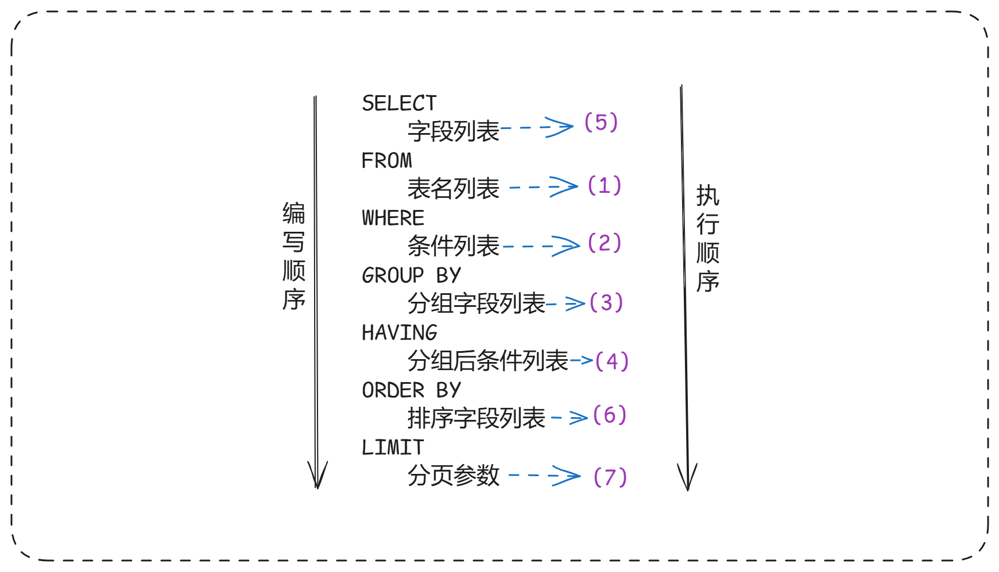

- SQL语句可以单行或多行书写，以分号结尾。
- SQL语句可以使用空格/缩进来增强语句的可读性。
- MySQL数据库的SQL语句不区分大小写，关键字建议使用大写。
- 注释：
- 单行注释：– 注释内容 或 # 注释内容
- 多行注释：/* 注释内容 */
SQL分类#
- SQL语句，根据其功能，主要分为四类：DDL、DML、DQL、DCL。
- DDL（Data Definition Language）：数据定义语言，用来定义数据库对象(数据库，表，字段)。
- DML（Data Manipulation Language）：数据操作语言，用来对数据库表中的数据进行增删。
- DQL（Data Query Language）：数据查询语言，用来查询数据库中表的记录。
- DCL（Data Control Language）：数据控制语言，用来创建数据库用户、控制数据库的访问权限。
DDL#
- 数据定义语言，用来定义数据库对象(数据库，表，字段)。
数据库操作#
- 查询所有数据库。
- 查询当前数据库。
- 创建数据库。
create database [ if not exists ] 数据库名 [ default charset 字符集 ] [ collate 排序规则 ];
- 删除数据库。
drop database [ if exists ] 数据库名;
- 切换数据库。
表操作#
- 查询当前数据库所有表。
- 查看指定表结构。
- 查询指定表的建表语句。
- 创建表结构。
CREATE TABLE 表名(
字段1 字段1类型 [COMMENT 字段1注释 ],
字段2 字段2类型 [COMMENT 字段2注释 ],
字段3 字段3类型 [COMMENT 字段3注释 ],
......
字段n 字段n类型 [COMMENT 字段n注释 ]
) [ COMMENT 表注释 ];
-- 注意: [...] 内为可选参数，最后一个字段后面没有逗号
create table emp(
id int comment '编号',
workno varchar(10) comment '工号',
name varchar(10) comment '姓名',
gender char(1) comment '性别',
age tinyint unsigned comment '年龄',
idcard char(18) comment '身份证号',
entrydate date comment '入职时间'
) comment '员工表';
- 添加字段。
ALTER TABLE 表名 ADD 字段名 类型 (长度) [ COMMENT 注释 ] [ 约束 ];
-- 为emp表增加一个新的字段”昵称”为nickname，类型为varchar(20)
ALTER TABLE emp ADD nickname varchar(20) COMMENT '昵称';
- 修改数据类型。
ALTER TABLE 表名 MODIFY 字段名 新数据类型 (长度);
- 修改字段名和字段类型。
ALTER TABLE 表名 CHANGE 旧字段名 新字段名 类型 (长度) [ COMMENT 注释 ] [ 约束 ];
-- 将emp表的nickname字段修改为username，类型为varchar(30)
ALTER TABLE emp CHANGE nickname username varchar(30) COMMENT '昵称';
- 删除字段。
-- 将emp表的字段username删除
ALTER TABLE emp DROP username;
- 修改表名。
ALTER TABLE 表名 RENAME TO 新表名;
-- 将emp表的表名修改为 employee
ALTER TABLE emp RENAME TO employee;
- 删除表：可选项 IF EXISTS 代表，只有表名存在时才会删除该表，表名不存在，则不执行删除操作(如果不
加该参数项，删除一张不存在的表，执行将会报错)。
DROP TABLE [ IF EXISTS ] 表名;
-- 如果tb_user表存在，则删除tb_user表
DROP TABLE IF EXISTS tb_user;
- 删除指定表, 并重新创建表。
-- 注意: 在删除表的时候，表中的全部数据也都会被删除。
TRUNCATE TABLE 表名;
DML#
- DML英文全称是Data Manipulation Language(数据操作语言)，用来对数据库中表的数据记录进行增、删、改操作。
添加数据(INSERT)#
- 给指定字段添加数据。
INSERT INTO 表名 (字段名1, 字段名2, ...) VALUES (值1, 值2, ...);
-- 给employee表所有的字段添加数据
insert into employee(id,workno,name,gender,age,idcard,entrydate)
values(1,'1','Itcast','男',10,'123456789012345678','2000-01-01');
- 给全部字段添加数据。
INSERT INTO 表名 VALUES (值1, 值2, ...);
insert into employee values(2,'2','张无忌','男',18,'123456789012345670','2005-01-01');
- 批量添加数据。
INSERT INTO 表名 (字段名1, 字段名2, ...) VALUES (值1, 值2, ...), (值1, 值2, ...), (值1, 值2, ...);
INSERT INTO 表名 VALUES (值1, 值2, ...), (值1, 值2, ...), (值1, 值2, ...);
-- 批量插入数据到employee表
-- 插入数据时，指定的字段顺序需要与值的顺序是一一对应的。
-- 字符串和日期型数据应该包含在引号中。
-- 插入的数据大小，应该在字段的规定范围内
insert into employee values(3,'3','韦','男',38,'123456789012345670','2005-01-01'),
(4,'4','赵','女',18,'123456789012345670','2005-01-01');
修改数据(UPDATE)#
- 修改数据的具体语法。
UPDATE 表名 SET 字段名1 = 值1 , 字段名2 = 值2 , .... [ WHERE 条件 ] ;
-- 修改id为1的数据，将name修改为ia
update employee set name = 'ia' where id = 1;
-- 修改id为1的数据, 将name修改为x, gender修改为 女
update employee set name = 'x' , gender = '女' where id = 1;
-- 将所有的员工入职日期修改为 2008-01-01
update employee set entrydate = '2008-01-01';
- 注意：修改语句的条件可以有，也可以没有，如果没有条件，则会修改整张表的所有数据。
删除数据(DELETE)#
- 删除数据的具体语法。
DELETE FROM 表名 [ WHERE 条件 ];
-- 删除gender为女的员工
delete from employee where gender = '女';
-- 删除所有员工
delete from employee;
- 注意事项：
- DELETE 语句的条件可以有，也可以没有，如果没有条件，则会删除整张表的所有数据。
- DELETE 语句不能删除某一个字段的值(可以使用UPDATE，将该字段值置为NULL即可)。
DQL#
- DQL英文全称是Data Query Language(数据查询语言)，数据查询语言，用来查询数据库中表的记录。
- DQL查询语句，语法结构如下：
SELECT
字段列表
FROM
表名列表
WHERE
条件列表
GROUP BY
分组字段列表
HAVING
分组后条件列表
ORDER BY
排序字段列表
LIMIT
分页参数
基础查询#
在基本查询的DQL语句中，不带任何的查询条件，查询的语法如下：
- 查询多个字段
SELECT 字段1, 字段2, 字段3 ... FROM 表名;
-- * 号代表查询所有字段，在实际开发中尽量少用（不直观、影响效率）。
SELECT * FROM 表名;
- 字段设置别名
SELECT 字段1 [ AS 别名1 ] , 字段2 [ AS 别名2 ] ... FROM 表名;
SELECT 字段1 [ 别名1 ] , 字段2 [ 别名2 ] ... FROM 表名;
- 去除重复记录
SELECT DISTINCT 字段列表 FROM 表名;
-- 查询公司员工的上班地址有哪些(不要重复)
select distinct workaddress '工作地址' from emp;
条件查询#
SELECT 字段列表 FROM 表名 WHERE 条件列表 ;
- 常用的比较运算符如下：
| ———-比较运算符———- |
功能 |
| > |
大于 |
| >= |
大于等于 |
| < |
小于 |
| <= |
小于等于 |
| = |
等于 |
| <> 或 != |
不等于 |
| BETWEEN … AND … |
在某个范围之内(含最小、最大值) |
| IN(…) |
在in之后的列表中的值，多选 |
| LIKE 占位符 |
模糊匹配(_匹配单个字符, %匹配任意个字符) |
| IS NULL |
是NULL |
- 常用的逻辑运算符如下：
| ———-比较运算符———- |
功能 |
| AND 或 && |
并且 (多个条件同时成立) |
| OR 或 || |
或者 (多个条件任意一个成立) |
| NOT 或 ! |
非 , 不是 |
聚合函数#
- 将一列数据作为一个整体，进行纵向计算。
- 常见的聚合函数。
| 函数 |
功能 |
| count |
统计数量 |
| max |
最大值 |
| min |
最小值 |
| avg |
平均值 |
| sum |
求和 |
- 语法：
SELECT 聚合函数(字段列表) FROM 表名 ;
- 注意: NULL值是不参与所有聚合函数运算的。
分组查询#
SELECT 字段列表 FROM 表名 [ WHERE 条件 ] GROUP BY 分组字段名 [ HAVING 分组后过滤条件 ];
- where与having区别：
- 执行时机不同：where是分组之前进行过滤，不满足where条件，不参与分组；而having是分组之后对结果进行过滤。
- 判断条件不同：where不能对聚合函数进行判断，而having可以。
- 注意事项:
- 分组之后，查询的字段一般为聚合函数和分组字段，查询其他字段无任何意义。
- 执行顺序: where > 聚合函数 > having 。
- 支持多字段分组, 具体语法为 : group by columnA,columnB。
排序查询#
SELECT 字段列表 FROM 表名 ORDER BY 字段1 排序方式1 , 字段2 排序方式2 ;
- 排序方式：ASC-升序(默认值)、DESC-降序。
- 注意事项：
- 如果是升序, 可以不指定排序方式ASC;
- 如果是多字段排序，当第一个字段值相同时，才会根据第二个字段进行排序;
分页查询#
SELECT 字段列表 FROM 表名 LIMIT 起始索引, 查询记录数;
- 注意事项：
- 起始索引从0开始，起始索引 = （查询页码 - 1）* 每页显示记录数。
- 分页查询是数据库的方言，不同的数据库有不同的实现，MySQL中是LIMIT。
- 如果查询的是第一页数据，起始索引可以省略，直接简写为 limit 10。
执行顺序#
- DQL语句在执行时的执行顺序，也就是先执行那一部分，后执行那一部分。

DCL#
DCL英文全称是Data Control Language(数据控制语言)，用来问权限。
管理用户#
- 查询用户。
-- Host代表当前用户访问的主机, 如果为localhost, 仅代表只能够在当前本机访问，是不可以远程访问的
-- User代表的是访问该数据库的用户名。在MySQL中需要通过Host和User来唯一标识一个用户。
select * from mysql.user;
- 创建用户。
CREATE USER '用户名'@'主机名' IDENTIFIED BY '密码';
-- 创建用户ic, 只能够在当前主机localhost访问, 密码123456
create user 'ic'@'localhost' identified by '123456';
-- 创建用户hl, 可以在任意主机访问该数据库, 密码123456
create user 'hl'@'%' identified by '123456';
- 修改用户密码。
ALTER USER '用户名'@'主机名' IDENTIFIED WITH mysql_native_password BY '新密码';
-- 修改用户hl的访问密码为1234
alter user 'hl'@'%' identified with mysql_native_password by '1234';
- 删除用户。
-- 删除 hl@localhost 用户
drop user 'hl'@'localhost';
- 注意事项：
- 在MySQL中需要通过用户名@主机名的方式，来唯一标识一个用户。
- 主机名可以使用 % 通配。
- 这类SQL开发人员操作的比较少，主要是DBA（ Database Administrator 数据库管理员）使用。
权限控制#
- MySQL中定义了很多种权限，但是常用的就以下几种：
| 权限 |
说明 |
| ALL, ALL PRIVILEGES |
所有权限 |
| SELECT |
查询数据 |
| INSERT |
插入数据 |
| UPDATE |
修改数据 |
| DELETE |
删除数据 |
| ALTER |
修改表 |
| DROP |
删除数据库/表/视图 |
| CREATE |
创建数据库/表 |
- 查询权限。
SHOW GRANTS FOR '用户名'@'主机名' ;
- 授予权限。
GRANT 权限列表 ON 数据库名.表名 TO '用户名'@'主机名';
- 撤销权限。
REVOKE 权限列表 ON 数据库名.表名 FROM '用户名'@'主机名';
- 注意：
- 多个权限之间，使用逗号分隔
- 授权时， 数据库名和表名可以使用 * 进行通配，代表所有
字符串函数#
| 函数 |
功能 |
| CONCAT(S1,S2,…Sn) |
字符串拼接，将S1，S2，… Sn拼接成一个字符串 |
| LOWER(str) |
将字符串str全部转为小写 |
| UPPER(str) |
将字符串str全部转为大写 |
| LPAD(str,n,pad) |
左填充，用字符串pad对str的左边进行填充，达到n个字符串长度 |
| RPAD(str,n,pad) |
右填充，用字符串pad对str的右边进行填充，达到n个字符串长度 |
| TRIM(str) |
去掉字符串头部和尾部的空格 |
| SUBSTRING(str,start,len) |
返回从字符串str从start位置起的len个长度的字符串 |
数值函数#
| 函数 |
功能 |
| CEIL(x) |
向上取整 |
| FLOOR(x) |
向下取整 |
| MOD(x,y) |
返回x/y的模 |
| RAND() |
返回0~1内的随机数 |
| ROUND(x,y) |
求参数x的四舍五入的值，保留y位小数 |
日期函数#
| 函数 |
功能 |
| CURDATE() |
返回当前日期 |
| CURTIME() |
返回当前时间 |
| NOW() |
返回当前日期和时间 |
| YEAR(date) |
获取指定date的年份 |
| MONTH(date) |
获取指定date的月份 |
| DAY(date) |
获取指定date的日期 |
| DATE_ADD(date, INTERVAL expr type) |
返回一个日期/时间值加上一个时间间隔expr后的时间值 |
| DATEDIFF(date1,date2) |
返回起始时间date1 和 结束时间date2之间的天数 |
流程函数#
| ——————————函数—————————— |
功能 |
| IF(value , t , f) |
如果value为true，则返回t，否则返回 f |
| IFNULL(value1 , value2) |
如果value1不为空，返回value1，否则返回value2 |
| CASE WHEN [ val1 ] THEN [res1] … ELSE [ default ] END |
如果val1为true，返回res1，… 否则返回default默认值 |
| CASE [ expr ] WHEN [ val1 ] THEN [res1] … ELSE [ default ] END |
如果expr的值等于val1返回res1，… 否则返回default默认值 |
- 约束是作用于表中字段上的规则，用于限制存储在表中的数据。
- 保证数据库中数据的正确、有效性和完整性。
- 约束是作用于表中字段上的，可以在创建表/修改表的时候添加约束。
| 约束 |
描述 |
关键字 |
| 非空约束 |
限制该字段的数据不能为null |
NOT NULL |
| 唯一约束 |
保证该字段的所有数据都是唯一、不重复的 |
UNIQUE |
| 主键约束 |
主键是一行数据的唯一标识，要求非空且唯一 |
PRIMARY KEY |
| 默认约束 |
保存数据时，如果未指定该字段的值，则采用默认值 |
DEFAULT |
| 检查约束(8.0.16版本之后) |
保证字段值满足某一个条件 |
CHECK |
| 外键约束 |
用来让两张表的数据之间建立连接，保证数据的一致性和完整性 |
FOREIGN KEY |
- 示例：
| 字段名 |
字段含义 |
字段类型 |
约束条件 |
约束关键字 |
| id |
ID唯一标识 |
int |
主键，并且自动增长 |
PRIMARY KEY, AUTO_INCREMENT |
| name |
姓名 |
varchar(10) |
不为空，并且唯一 |
NOT NULL, UNIQUE |
| age |
年龄 |
int |
大于0，并且小于等于120 |
CHECK |
| status |
状态 |
char(1) |
如果没有指定该值，默认为1 |
DEFAULT |
| gender |
性别 |
char(1) |
无 |
|
- 对应的建表语句为：
CREATE TABLE tb_user(
id int AUTO_INCREMENT PRIMARY KEY COMMENT 'ID唯一标识',
name varchar(10) NOT NULL UNIQUE COMMENT '姓名' ,
age int check (age > 0 && age <= 120) COMMENT '年龄' ,
status char(1) default '1' COMMENT '状态',
gender char(1) COMMENT '性别'
)
外键约束#
- 外键：用来让两张表的数据之间建立连接，从而保证数据的一致性和完整性。
- 添加外键。
CREATE TABLE 表名(
字段名 数据类型,
...
[CONSTRAINT] [外键名称] FOREIGN KEY (外键字段名) REFERENCES 主表 (主表列名)
);
ALTER TABLE 表名 ADD CONSTRAINT 外键名称 FOREIGN KEY (外键字段名) REFERENCES 主表 (主表列名) ;
- 删除外键。
ALTER TABLE 表名 DROP FOREIGN KEY 外键名称;
-
添加了外键之后，再删除父表数据时产生的约束行为，我们就称为删除/更新行为。具体的删除/更新行为有以下几种：
| 行为 |
说明 |
| NO ACTION |
当在父表中删除/更新对应记录时，首先检查该记录是否有对应外键，如果有则不允许删除/更新。 (与 RESTRICT 一致) 默认行为 |
| RESTRICT |
当在父表中删除/更新对应记录时，首先检查该记录是否有对应外键，如果有则不允许删除/更新。 (与 NO ACTION 一致) 默认行为 |
| CASCADE |
当在父表中删除/更新对应记录时，首先检查该记录是否有对应外键，如果有，则也删除/更新外键在子表中的记录 |
| SET NULL |
当在父表中删除对应记录时，首先检查该记录是否有对应外键，如果有则设置子表中该外键值为null（这就要求该外键允许取null） |
| SET DEFAULT |
父表有变更时，子表将外键列设置成一个默认的值 (Innodb不支持) |
-
具体语法：
ALTER TABLE 表名 ADD CONSTRAINT 外键名称 FOREIGN KEY (外键字段) REFERENCES
主表名 (主表字段名) ON UPDATE CASCADE ON DELETE CASCADE;
数据类型#
数值类型#
| 类型 |
大小/bytes |
有符号范围 |
无符号范围(unsigned) |
描述 |
| TINYINT |
1 |
(-128, 127) |
(0, 255) |
1字节整数 |
| SMALLINT |
2 |
(-32768, 32767) |
(0, 65535) |
2字节整数 |
| MEDIUMINT |
3 |
(-8388608, 8388607) |
(0, 16777215) |
3字节整数 |
| INT/INTEGER |
4 |
(-2147483648, 2147483647) |
(0, 4294967295) |
4字节整数 |
| BIGINT |
8 |
(-2^63, 2^63-1) |
(0, 2^64-1) |
8字节整数 |
| FLOAT |
4 |
(-3.402823466 E+38, 3.402823466351 E+38) |
(1.175494351 E-38, 3.402823466 E+38) 与 0 |
单精度浮点数 |
| DOUBLE |
8 |
(-1.7976931348623157 E+308, 1.7976931348623157 E+308) |
(2.2250738585072014 E-308, 1.7976931348623157 E+308) 与 0 |
双精度浮点数 |
| DECIMAL |
|
依赖于M(精度)和D(标度)的值 |
依赖于M(精度)和D(标度)的值 |
小数值(精确点数) |
字符串类型#
- char 与 varchar 都可以描述字符串，char是定长字符串，指定长度多长，就占用多少个字符，和字段值的长度无关。
- 而varchar是变长字符串，指定的长度为最大占用长度 。相对来说，char的性能会更高些。
| 类型 |
大小/bytes |
描述 |
| CHAR |
0-255 |
定长字符串(需要指定长度) |
| VARCHAR |
0-65535 |
变长字符串(需要指定长度) |
| TINYBLOB |
0-255 |
不超过255个字符的二进制数据 |
| TINYTEXT |
0-255 |
短文本字符串 |
| BLOB |
0-65535 |
二进制形式的长文本数据 |
| TEXT |
0-65535 |
长文本数据 |
| MEDIUMBLOB |
0-16777215 |
二进制形式的中等长度文本数据 |
| MEDIUMTEXT |
0-16777215 |
中等长度文本数据 |
| LONGBLOB |
0-4294967295 |
二进制形式的极大文本数据 |
| LONGTEXT |
0-4294967295 |
极大文本数据 |
日期时间类型#
| 类型 |
大小/bytes |
范围 |
格式 |
描述 |
| DATE |
3 |
1000-01-01 至 9999-12-31 |
YYYY-MM-DD |
日期值 |
| TIME |
3 |
-838:59:59 至 838:59:59 |
HH:MM:SS |
时间值或持续时间 |
| YEAR |
1 |
1901 至 2155 |
YYYY |
年份值 |
| DATETIME |
8 |
1000-01-01 00:00:00 至 9999-12-31 23:59:59 |
YYYY-MM-DD HH:MM:SS |
混合日期和时间值 |
| TIMESTAMP |
4 |
1970-01-01 00:00:01 至 2038-01-19 03:14:07 |
YYYY-MM-DD HH:MM:SS |
混合日期和时间值 |